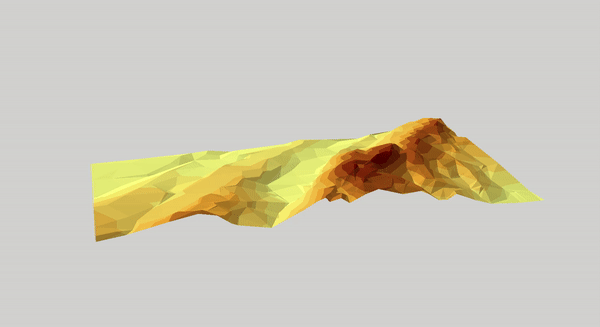
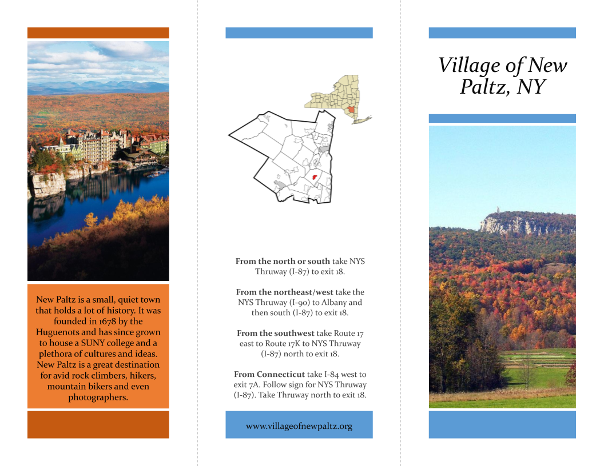
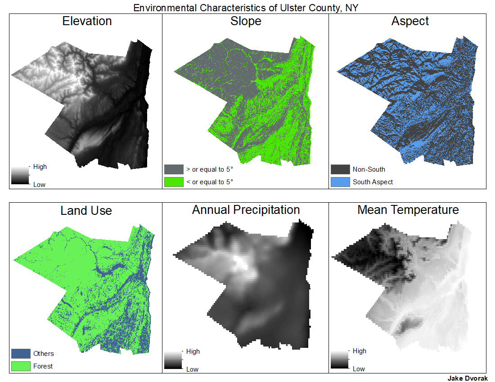

DESCRIPTION

.png "Village of New Paltz Visitor Brochure")
DESCRIPTION

DESCRIPTION

During the first half of my senior year at New Paltz, I was asked to create a map using GIS for a professor of archaeology, prior to doing an independent study with the same professor. He had some data on burials that were discovered on Historic Hugenot Street in New Paltz, NY that he asked me to map out. ...............